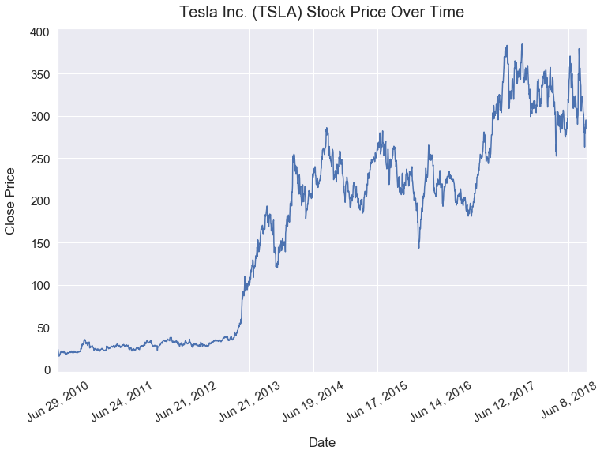

When to Use a Logarithmic Scale
- September 19, 2018 • 5 min read
- Key Terms: log scale
In this tutorial, I'll explain the importance of log scales in data visualizations and provide a simple example.
Simply put, log scales can help visualize between large descrepancies of values on a single axis - such as if you wanted to compare net worth of individuals worth \\(40,000 and \\)800,000,000.
Import Modules
import matplotlib.pyplot as plt
from matplotlib import ticker
import matplotlib.ticker as tick
from matplotlib.ticker import ScalarFormatter
import pandas as pd
import seaborn as sns
import numpy as np
% matplotlib inline
Visualization Setup Code
sns.set(font_scale=1.4)
def reformat_large_tick_values(tick_val, pos):
"""
Turns large tick values (in the billions, millions and thousands) such as 4500 into 4.5K and also appropriately turns 4000 into 4K (no zero after the decimal).
"""
if tick_val >= 1000000000:
val = round(tick_val/1000000000, 1)
new_tick_format = '{:}B'.format(val)
elif tick_val >= 1000000:
val = round(tick_val/1000000, 1)
new_tick_format = '{:}M'.format(val)
elif tick_val >= 1000:
val = round(tick_val/1000, 1)
new_tick_format = '{:}K'.format(val)
elif tick_val < 1000:
new_tick_format = round(tick_val, 1)
else:
new_tick_format = tick_val
# make new_tick_format into a string value
new_tick_format = str(new_tick_format)
# code below will keep 4.5M as is but change values such as 4.0M to 4M since that zero after the decimal isn't needed
index_of_decimal = new_tick_format.find(".")
if index_of_decimal != -1:
value_after_decimal = new_tick_format[index_of_decimal+1]
if value_after_decimal == "0":
# remove the 0 after the decimal point since it's not needed
new_tick_format = new_tick_format[0:index_of_decimal] + new_tick_format[index_of_decimal+2:]
return new_tick_format
Linear Scale
x_values = list(range(1, 1001))
y_values = list(range(1, 1001))
In this plot below, I plot a simple function of y=x. So, for every input value of x, you get the same output value regarded as y. Here's the relationship of the first few values detailed in a table.
| Input | Relationship | Output |
|---|---|---|
| 1 | x 1 | 1 |
| 2 | x 1 | 2 |
| 3 | x 1 | 3 |
A linear scale assigns equal horizontal or vertical distances to axes values. Take note of the sequential x-axes and y-axes values that each increase by 200.
plt.figure(figsize=(8, 8))
plt.plot(x_values, y_values)
plt.title("y=x Function On a Y-Axis Linear Scale");

Log Scale
First off, what are logarithms? Logarithms help us answer the question: how many of one number do we multiply to get another number?
For example, how many 3s do we multiply to get 9? The answer is 3 x 3 = 9 so we had to multiple 3 twice to get 9.
This logic is powerful in helping us build a new scale to easily compare small and large values on a chart.
The number line scale below by Math is Fun helps visualize the differences between a linear scale and logarithm scale.

Going back to our earlier example, below is the function y=x with the y-axis on a logarithmic scale.
All the same data points from above are plotted; however, notice how the y-axis tick values jump from 1 to 10 to 100 to 1K. With each y-axis tick value, there's an exponential increase.
plt.figure(figsize=(8, 8))
plt.plot(x_values, y_values, label='linear scale');
plt.yscale('log')
plt.title("y=x Function On a Y-Axis Log Scale")
ax = plt.gca()
ax.yaxis.set_major_formatter(tick.FuncFormatter(reformat_large_tick_values));

Real-Life Example: Visualizing Net Worth of People
I attended the University of Michigan for college.
Below, I randomly generated fake net worth data for eight individuals. Since I went to Michigan, I also found the actual net worth data for three extremely wealthy alumni of the university including: Stephen M. Ross, Bobby Kotick and Tom Brady.
data ={'net_worth_us_dollars': [40000, 14000, 120000, 8300, 3200, 3500, 28000, 120000, 150000, 7000000000, 7700000000, 180000000], 'name': ['Joe Smith', 'Jill Brown', 'Mark James', 'Sean Gopher', 'Mary Blake', 'Paul George', 'Melanie Smith', 'Joe Gold', 'Bill Brew', 'Bobby Kotick', 'Stephen M. Ross', 'Tom Brady']}
df = pd.DataFrame(data)
Below is a printout of the net worth of these 11 individuals sorted from most wealthy to least wealthy.
The wealthiest individual has a net worth of \\(7,700,000,000 and the least wealthy individual has a net worth of \\)3,200.
df.sort_values(by='net_worth_us_dollars', ascending=False)
| name | net_worth_us_dollars | |
|---|---|---|
| 10 | Stephen M. Ross | 7700000000 |
| 9 | Bobby Kotick | 7000000000 |
| 11 | Tom Brady | 180000000 |
| 8 | Bill Brew | 150000 |
| 2 | Mark James | 120000 |
| 7 | Joe Gold | 120000 |
| 0 | Joe Smith | 40000 |
| 6 | Melanie Smith | 28000 |
| 1 | Jill Brown | 14000 |
| 3 | Sean Gopher | 8300 |
| 5 | Paul George | 3500 |
| 4 | Mary Blake | 3200 |
High Net Worth Individuals Bar Chart - Linear Scale
Here is a horizontal bar chart of the names of individuals and their net worth on a linear scale.
df.set_index('name')['net_worth_us_dollars'].sort_values().plot(kind='barh', figsize=(10, 8))
plt.xlabel("Net Worth [$]", labelpad=16)
plt.ylabel("Name", labelpad=16)
plt.title("Net Worth of a Sample of University of Michigan Alumni", y=1.02)
ax = plt.gca()
ax.xaxis.set_major_formatter(tick.FuncFormatter(reformat_large_tick_values))

It's glaringly obvious that we cannot see the net worth of the 8 least wealthy individuals. This is a big problem as it makes this graph uninterpretable.
High Net Worth Individuals Bar Chart - Log Scale
Here is a horizontal bar chart of the names of individuals and their net worth on a logarithmic scale.
df.set_index('name')['net_worth_us_dollars'].sort_values().plot(kind='barh', figsize=(12, 8), logx=True)
plt.xlabel("Net Worth [$]", labelpad=16)
plt.ylabel("Name", labelpad=16)
plt.title("Net Worth of a Sample of University of Michigan Alumni", y=1.02, fontsize=20)
ax = plt.gca()
ax.xaxis.set_major_formatter(tick.FuncFormatter(reformat_large_tick_values));

Look closely at how the scale on the x-axis changed.
This visualization is much better! We can now easily interpret the net worth of all 11 individuals on this visualization.
Real-Life Example: Tesla Inc. (TSLA) Stock Price Over Time
Tesla is a company best known for their electric vehicles. They IPOed on June 29, 2010. Since then, their stock has been trading on the NASDAQ as the symbol TSLA.
In recent years, the Tesla stock has surged upwards despite a lot of volatility.
df_tesla = pd.read_csv('TSLA.csv')
df_tesla.head()
| Date | Open | High | Low | Close | Adj Close | Volume | |
|---|---|---|---|---|---|---|---|
| 0 | 2010-06-29 | 19.000000 | 25.00 | 17.540001 | 23.889999 | 23.889999 | 18766300 |
| 1 | 2010-06-30 | 25.790001 | 30.42 | 23.299999 | 23.830000 | 23.830000 | 17187100 |
| 2 | 2010-07-01 | 25.000000 | 25.92 | 20.270000 | 21.959999 | 21.959999 | 8218800 |
| 3 | 2010-07-02 | 23.000000 | 23.10 | 18.709999 | 19.200001 | 19.200001 | 5139800 |
| 4 | 2010-07-06 | 20.000000 | 20.00 | 15.830000 | 16.110001 | 16.110001 | 6866900 |
df_tesla['date_datetime'] = pd.to_datetime(df_tesla['Date'])
df_tesla['date_month_day_year'] = df_tesla['date_datetime'].dt.strftime('%b %-d, %Y')
Tesla Stock Price Over Time - Linear Scale
On this linear scale below, we can see the huge spike around April 2013. However, before that, at a glance, the stock looks fairly stable. TSLA seemed like a rather boring holding early on.
df_tesla.set_index('date_month_day_year')['Close'].plot(kind='line', figsize=(12, 8), rot=30)
plt.ylabel("Close Price", labelpad=16)
plt.xlabel("Date", labelpad=16)
plt.title("Tesla Inc. (TSLA) Stock Price Over Time", y=1.02, fontsize=20);

Tesla Stock Price Over Time - Log Scale
The visualization below shows the trend of the Tesla stock price over time on a log scale.
The linear scale above was a bit deceiving. Now, it's much easier to see that in the first ~3 years (until April 2013) after the IPO, the stock significantly increased from ~18 to ~37 - doubling in price. That would be a great return for investors! Yet, nowadays I'd be hard-pressed to find investors touting the first 3 years of Tesla's stock performance.
ax = df_tesla.set_index('date_month_day_year')['Close'].plot(kind='line', figsize=(14, 8), rot=30, logy=True)
plt.ylabel("Close Price", labelpad=18)
plt.xlabel("Date", labelpad=18)
plt.title("Tesla Inc. (TSLA) Stock Price Over Time", y=1.02, fontsize=20)
for axis in [ax.yaxis]:
axis.set_major_formatter(ScalarFormatter())
ax.set_yticks([25, 50, 75, 100, 125, 150, 175, 200, 250, 300, 350, 400]);